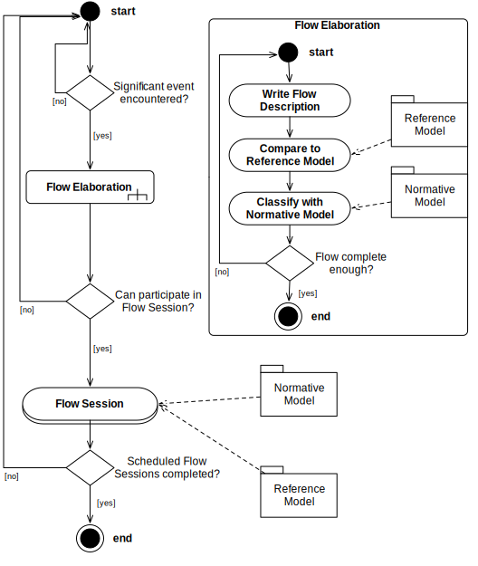

Support personal reflection on leadership in teams
Support learning from experience together with peers
Support learning from others’ experience
Increase of team leadership capacities
How?
If a significant event occurs in day-to-day team leadership practice, a written reflection (or flow) can be elaborated. A template and a reflection guideline provide recommendations for flow structuring and assisting questions.The reference model can be used to compare personal experiences with reference flows (retrieved from peer-reviewed journal articles). Interactions can be classified and labelled using normative categories.Moderated peer learning meetings (or flow sessions) may help clarify significant interpersonal work situations. Flow sessions are rigorously organized adhering to the flow session policy. The steps described in the flow session procedure description may guide through peer learning sessions, particularly in the beginning.

CommunityPlease support the improvement of the framework by filling out a framework evaluation (max. 10 Min.). Thank you!
Evaluate!Please subscribe to the newsletter to get information on interpersonal reflection meetings (flow sessions) in your area, updates to the reference model, and news on advances in the practice of interpersonal interaction in team leadership.